1. 简单线形图
import matplotlib.pyplot as plt
%matplotlib inline
import numpy as np
plt.style.use('seaborn-whitegrid')
1.1 绘制线形图
Matplotlib 利用面向对象接口作图时，需要需要先创建一个图形对象 fig 和一个坐标轴对象 ax：
fig = plt.figure()
ax = plt.axes()
在 Matplotlib 中，fig (plt.figure 类的一个实例) 可以看成是一个能容纳各种坐标轴、图形、文字、标签的容器；ax (plt.axes 类的一个实例) 是一个带有刻度和标签的矩形，最终包含所有可视化的图形元素。创建好坐标轴后就可以用 ax.plot 作图了（ax.plot 必须与创建的 fig，ax 对象在一起）。在 plt.figure() 中设置参数figuresize可以指定图形的大小，指定参数 dpi可以指定分辨率。
x = np.linspace(0, 10, 1000)
fig = plt.figure(figsize=(8, 6))
ax = plt.axes()
ax.plot(x, np.sin(x))
[<matplotlib.lines.Line2D at 0x7f8630237ca0>]
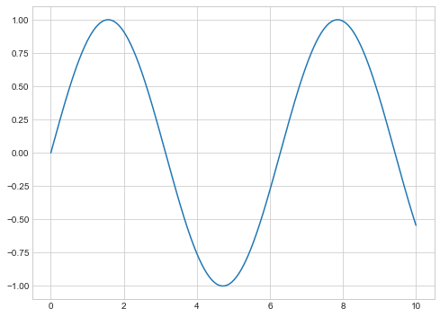
观察到图片上方的标识 [<matplotlib.lines.Line2D at 0x7f8670fc8130>]，这说明 plot 函数生成了一个 plt.Line2D 实例。
也可以利用类似 Matlab 接口作图：
plt.figure(figsize=(8,6))
plt.plot(x, np.sin(x))
[<matplotlib.lines.Line2D at 0x7f867139f160>]

注意，如果我们在
ax.plot()或plt.plot()外面指定y = np.sin(x)，然后将y作为第二个参数输入ax.plot()或plt.plot()，这样画出的图形是散点图。
1.2 一张图中创建多条线
1.2.1 重复命令
在面向对象编程接口中，需要重复 ax.plot() 命令：
fig = plt.figure(figsize=(8,6))
ax = plt.axes()
x = np.linspace(0, 10, 1000)
ax.plot(x, np.cos(x))
ax.plot(x, np.sin(x))
[<matplotlib.lines.Line2D at 0x7f86495c8730>]
在 Matlab 接口中，需要重复 plt.plot() 命令：
plt.figure(figsize=(8,6))
plt.plot(x, np.sin(x))
plt.plot(x, np.cos(x))
[<matplotlib.lines.Line2D at 0x7f865144afd0>]
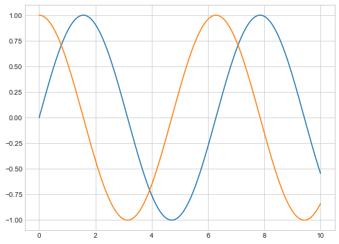
对于有一定规律的函数，我们可以构建一个循环来多次作图，还可以指定风格：
plt.figure(figsize=(8,6))
style = ['-r', '--g', ':b', '-.c']
for i in range(4):
plt.plot(x, np.sin(x+np.pi * 0.5 * i), style[i])
1.2.2 一次性作图
假设 x.shape=(1000,)，利用矢量运算生成 y.shape=(1000, n)，则 plt.plot(x, y)可以一次性做出 n 条线。这一操作可以利用 numpy 广播：
y = np.sin(x[:, np.newaxis] + np.pi * np.arange(0, 2, 0.5))
plt.figure(figsize=(8,6))
plt.plot(x, y)
[<matplotlib.lines.Line2D at 0x7f8671818e50>,
<matplotlib.lines.Line2D at 0x7f8671818f40>,
<matplotlib.lines.Line2D at 0x7f8671824040>,
<matplotlib.lines.Line2D at 0x7f8671824100>]
上面的广播原理为：
事实上我们也可以人工创造出类似的矩阵形式，当所要绘制的函数无规律时，这样做更省事：
s = [
x - 1,
np.sin(x),
np.log1p(x),
np.e ** -x
]
s = np.array(s)
plt.figure(figsize=(8,6))
plt.plot(x, s.T)
[<matplotlib.lines.Line2D at 0x7f86514bed60>,
<matplotlib.lines.Line2D at 0x7f86514bee50>,
<matplotlib.lines.Line2D at 0x7f86514bef10>,
<matplotlib.lines.Line2D at 0x7f86514befd0>]
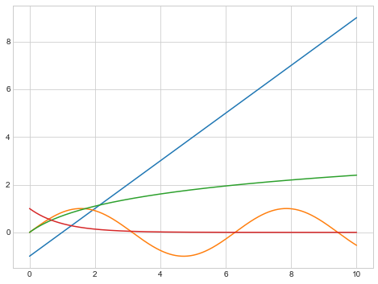
1.3 设置线条颜色
对 ax.plot() 和 plt.plot() 设置 color 参数即可设置颜色，支持多种表示方式，主要强调三种：
- 标准颜色名称：red, blue, green 等（可以省略
color=） - 缩写颜色代码：rgbcmyk，分别是 red/green/blue/cyan/magenta/yellow/black 的缩写（可以省略
color=） - RGB 元组: (x, y, z)，x,y,z 是 0 到 1 的实数，表示 R/G/B 的程度
如果不指定颜色，Matplotlib 会为多条线自动循环使用一组默认的颜色。
fig = plt.figure(figsize=(8,6))
ax = plt.axes()
ax.plot(x, np.sin(x - 0), "red",)
ax.plot(x, np.sin(x - 1), "c",)
ax.plot(x, np.sin(x - 2), color=(0, 0, 1),)
ax.plot(x, np.sin(x - 3), color=(0, 1, 0),)
[<matplotlib.lines.Line2D at 0x7f865191bd90>]
plt.figure(figsize=(8,6))
plt.plot(x, x**3 + 0, color='r')
plt.plot(x, x**3 + 200, color='c')
plt.plot(x, x**3 + 400, color='m')
plt.plot(x, x**3 + 600, color='k')
[<matplotlib.lines.Line2D at 0x7f8649742fd0>]
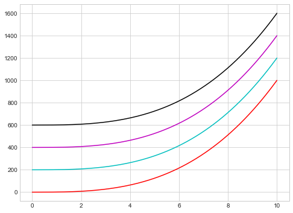
1.4 设置线条风格
对 ax.plot() 和 plt.plot() 设置 linestyle 参数（可以省略 linestyle= ）即可设置线条风格，一共有四种风格：
- 实线：‘solid’，简写为 ‘-’
- 虚线：‘dashed’，简写为 ‘–’
- 点划线：‘dashdot’，简写为 ‘-.’
- 点线：‘dotted’，简写为 ‘:’
fig = plt.figure(figsize=(8,6))
ax = plt.axes()
ax.plot(x, np.sin(x), linestyle='-')
ax.plot(x, np.sin(x-1), linestyle='--')
ax.plot(x, np.sin(x-2), '-.')
ax.plot(x, np.sin(x-3), ':')
[<matplotlib.lines.Line2D at 0x7f86304834f0>]
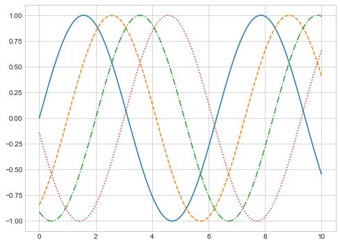
plt.figure(figsize=(8,6))
plt.plot(x, x**3 - x**2 + x, '-')
plt.plot(x, x**3 - x**2 + x + 100, '--')
plt.plot(x, x**3 - x**2 + x + 200, '-.')
plt.plot(x, x**3 - x**2 + x + 300, ':')
[<matplotlib.lines.Line2D at 0x7f86303fd670>]

可以将 linestyle 与 color 简写合并起来，直接输入 ax.plot 或 plt.plot 中同时设置线条风格与颜色：
fig = plt.figure(figsize=(8,6))
ax = plt.axes()
ax.plot(x, x+0, '-r')
ax.plot(x, x+1, '--c')
ax.plot(x, x+2, '-.m')
ax.plot(x, x+3, ':k')
[<matplotlib.lines.Line2D at 0x7f8651849fa0>]
plt.figure(figsize=(8,6))
plt.plot(x, x+0, '-r')
plt.plot(x, x+2, '--c')
plt.plot(x, x+4, '-.m')
plt.plot(x, x+6, ':y')
[<matplotlib.lines.Line2D at 0x7f86513098b0>]
1.5 调整上下限
在面向对象接口作图时，对通过 ax.set_xlim(xmin, xmax) 以及 ax.set_ylim(ymin, ymax) 来设置上下限；在 Matlab 接口作图时，通过 plt.xlim(xmin, xmax) 以及 plt.ylim(ymin, ymax)` 来设置上下限：
fig = plt.figure(figsize=(8,6))
ax = plt.axes()
ax.set_xlim(2, 3)
ax.set_ylim(3, 4)
ax.plot(x, x+1, '--r')
[<matplotlib.lines.Line2D at 0x7f865187d9a0>]
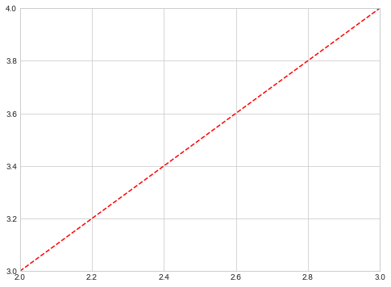
plt.figure(figsize=(8,6))
plt.plot(x, x+1, '-.m')
plt.xlim(2, 3)
plt.ylim(3, 4)
(3.0, 4.0)
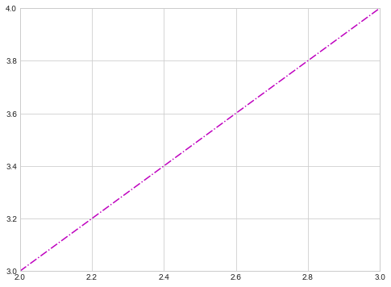
逆序设置坐标轴刻度值即可逆序显示图形，对两种接口都成立：
fig = plt.figure(figsize=(8,6))
ax = plt.axes()
ax.set_xlim(3, 2)
ax.set_ylim(3, 4)
ax.plot(x, x+1, '--r')
[<matplotlib.lines.Line2D at 0x7f86510134f0>]
plt.figure(figsize=(8,6))
plt.plot(x, x+1, '-.c')
plt.xlim(3, 2)
plt.ylim(3,4)
(3.0, 4.0)
利用 ax.axis([xmin, xmax, ymin, ymax]) 和 plt.axis([xmin, xmax, ymin, ymax]) 方法可以一行代码设置坐标限值:
fig = plt.figure(figsize=(8,6))
ax = plt.axes()
ax.axis([2, 3, 2, 5])
ax.plot(x, x+1, '--b')
[<matplotlib.lines.Line2D at 0x7f86518a05e0>]
plt.figure(figsize=(8,6))
plt.plot(x ,x+1, 'r')
plt.axis([2, 3, 5, 2])
(2.0, 3.0, 5.0, 2.0)
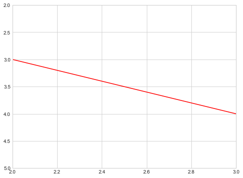
ax.axis() 和 plt.axis() 方法还可以自动调整坐标限，如设置参数 ‘tight’ 可以使图形自动收紧坐标轴；设置参数 ‘equal’ 可以使图形横纵轴单位长度相等：
fig = plt.figure(figsize=(8,6))
ax = plt.axes()
ax.axis('equal')
ax.plot(x, x+1, '--r')
[<matplotlib.lines.Line2D at 0x7f8671bfb460>]
plt.figure(figsize=(8,6))
plt.plot(x ,x+1, 'r')
plt.axis('tight')
(-0.5, 10.5, 0.5, 11.5)
在结束本小节之前，我们需要再次强调 Matplotlib 的两种作图接口的方法差异。大多数的 plt 函数可以直接转换成 ax 方法，如：
plt.plot()->ax.plotplt.legend()->ax.legend()plt.axis()->ax.axis()
但是有一些函数略有差别，如：
plt.xlim->ax.set_xlimplt.ylim->ax.set_ylimplt.title->ax.set_titleplt.xlabel->ax.set_xlabelplt.ylabel->ax.set_ylabel
在面向对象接口作图时，可以采用 ax.set() 方法一次性设置所有属性：
fig = plt.figure(figsize=(8,6))
ax = plt.axes()
ax.set(
xlim=(0, 10),
ylim=(-2, 2),
title='A sample Plot',
xlabel='x',
ylabel='sin(x)'
)
ax.plot(x, np.sin(x), '-r')
[<matplotlib.lines.Line2D at 0x7f8651a02490>]
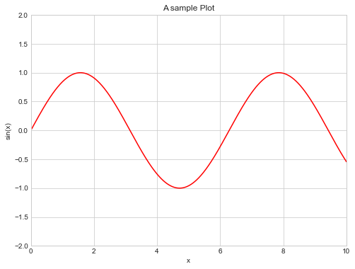
1.6 设置图形标签
这一小节介绍设置：图形标题、坐标轴标题、图例的方法。可以通过 plt.title('title'), plt.xlabel('xlabel'), ‘plt.ylabel(‘ylabel’)’ 设置图形标题和坐标轴标题；对于面向对象接口，可以对 ax.set() 直接设置参数：
fig = plt.figure(figsize=(8,6))
ax = plt.axes()
ax.set(
title='a sine curve',
xlabel='x',
ylabel='sin(x)'
)
ax.plot(x, np.sin(x), 'b')
[<matplotlib.lines.Line2D at 0x7f864998aca0>]
plt.figure(figsize=(8,6))
plt.title('a sine curve')
plt.xlabel('x')
plt.ylabel('sin(x)')
plt.plot(x, np.sin(x), 'r')
[<matplotlib.lines.Line2D at 0x7f8651a355b0>]
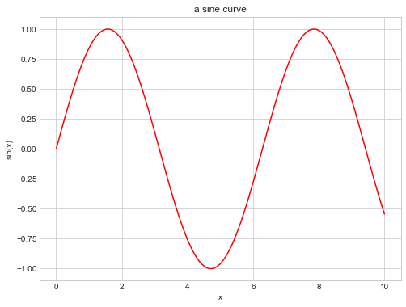
对于一张图形中多条线的情况，可以在 ax.plot() 或 plt.plot() 中指明 label 参数来设置标签。通过 ax.legend() 或 plt.legend() 来创建图例：
fig = plt.figure(figsize=(8,6))
ax = plt.axes()
ax.set(
title='a sine curve',
xlabel='x',
ylabel='sin(x)'
)
ax.plot(x, np.sin(x), 'b', label='sin(x)')
ax.plot(x, np.cos(x), 'r', label='cos(x)')
ax.legend()
<matplotlib.legend.Legend at 0x7f86306da760>
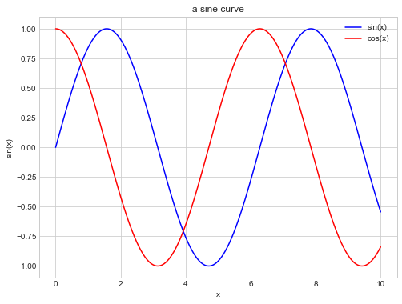
plt.figure(figsize=(8,6))
plt.title('a sine curve')
plt.xlabel('x')
plt.ylabel('sin(x)')
plt.plot(x, np.sin(x), 'r', label='sin(x)')
plt.plot(x, np.cos(x), 'b', label='cos(x)')
plt.legend()
<matplotlib.legend.Legend at 0x7f8651b1af40>

2. 简单散点图
2.1 plot 画散点图
我们在 plot() 函数外定义 y，然后将 y 输入 plot() 函数，这样绘制出的是散点图。我们可以为散点图设置图形符号的类型，常用的简写有 'o', 's', 'v', '^', '>', '<', 'x', '+'
x = np.linspace(0, 10, 30)
y = np.sin(x) + x
fig = plt.figure(figsize=(8,6))
ax = plt.axes()
t = 0
for mark in ['o', '.', ',', 'x', '+', 'v', '^', '<', '>', 's', 'd']:
ax.plot(x, y+t, mark, label=f"marker is {mark}")
t += 5
ax.legend()
<matplotlib.legend.Legend at 0x7f8651b62910>
plt.figure(figsize=(8,6))
t = 0
for mark in ['o', '.', ',', 'x', '+', 'v', '^', '<', '>', 's', 'd']:
plt.plot(x, y+t, mark, label=f"marker is {mark}")
t += 2
plt.legend()
<matplotlib.legend.Legend at 0x7f86307746d0>
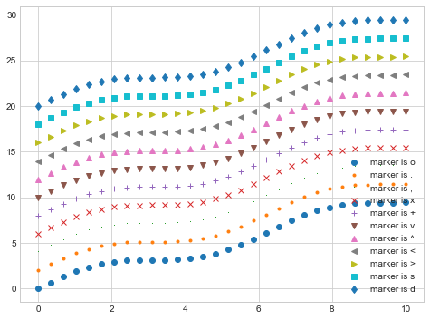
同个将 color, linestyle 的简写参数组合（顺序无所谓），我们可以将散点与线条组合起来：
plt.figure(figsize=(8,6))
plt.plot(x, y, '-rx')
[<matplotlib.lines.Line2D at 0x7f8671cc8bb0>]
通过设置 markersize， markerfacecolor， markeredgecolor， markeredgewidth 参数，可以设置散点风格：
plt.figure(figsize=(8,6))
plt.plot(
x, y, '-rs',
linewidth=4,
markersize=15,
markerfacecolor='white',
markeredgecolor='m',
markeredgewidth=2
)
[<matplotlib.lines.Line2D at 0x7f8649e09490>]
2.2 scatter 画散点图
plt/ax.scatter 与 plt/ax.plot 的主要差别在于，前者在创建散点图时有更高的灵活性，可以单独控制每个散点与数据匹配，也可以让每个散点有不同属性（大小、表面颜色、边框颜色等）。在处理大量数据使，scatter 的效率要低于 plot.
plt/ax.scatter的参数中：
- alpha：控制透明度，为标量；
- c：控制颜色，可以是标量或列表；
- s：控制大小，可以是标量或列表：
plt.figure(figsize=(8,6))
a = np.random.rand(5)
b = a * 2
plt.scatter(
a,b,
c=['b','r','b','r','b'],
s=np.array([1, 2, 3, 4, 5]) * 30
)
<matplotlib.collections.PathCollection at 0x7f864a113130>
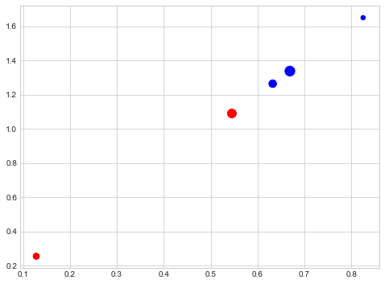
上面的例子是将参数c设置为颜色序列，但是一般我们用来做分类的数据Y是整数0，1，2，…….，等等。此时就需要cmap参数将数值转换为对应的颜色了，这部分会在后面详细介绍。
rng = np.random
x = rng.randn(100)
y = rng.randn(100)
color = rng.rand(100)
size = rng.rand(100) * 1000
plt.figure(figsize=(8,6))
plt.scatter(
x, y,
c=color,
s=size,
alpha=0.3,
cmap='viridis'
)
plt.colorbar()
<matplotlib.colorbar.Colorbar at 0x7f863096e550>
fig = plt.figure(figsize=(8,6))
ax = plt.axes()
ax.scatter(
x, y,
c=color,
s=size,
alpha=0.3,
cmap='viridis'
)
# colorbar() 报错
<matplotlib.collections.PathCollection at 0x7f86304ebc70>
利用散点的颜色，大小等性质，可以用来分析多维数据的信息。例如下例中，每个点的 x 坐标为鸢尾花花萼的长度，y 坐标为花萼的宽度，点的大小为花瓣的宽度，这三者对应着模型的三个特征；三种颜色对应不同类型的鸢尾花，这对应着模型的目标值：
from sklearn.datasets import load_iris
iris = load_iris()
feature = iris.data.T
plt.figure(figsize=(8,6))
plt.scatter(
feature[0],
feature[1],
alpha=0.2,
s = 100*feature[3],
c = iris.target,
cmap='viridis'
)
plt.xlabel(iris.feature_names[0])
plt.ylabel(iris.feature_names[1])
Text(0, 0.5, 'sepal width (cm)')